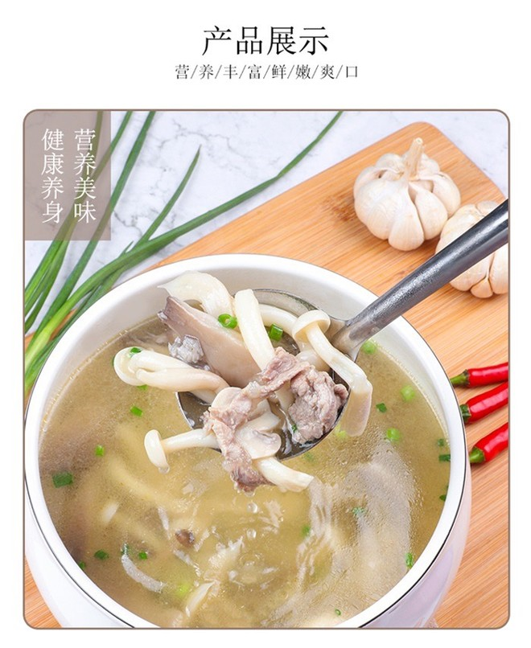

无敌鲜美的青椒烩双菌

口蘑300克，选购的时候不要挑雪白雪白的口蘑，那种口蘑是经过漂白处理的
口蘑切掉根部后用盐水泡一泡大约泡15-20分钟
泡过盐水的口蘑很好清洗，口蘑颜色有点黄白不均千万别以为我没洗干净，
是因为买口蘑回来放一段时间会被氧化，这是正常的，雪白雪白的口蘑是经过漂白处理的
洗干净的口蘑一个切成4瓣，一分为二也可以，随自己喜好就好
猪肚菌250克，清洗干净
用小刀削成大小合适的细条
2个青椒切丝，喜欢吃辣的可以多放几个,蒜瓣切碎备用
锅里放油下口蘑和猪肚菌煸炒
加一丢丢盐，把口蘑和猪肚菌的水份炒出来
一直炒到水份基本收干，水份还有一丢丢没关系啦，把口蘑和猪肚菌盛起
把锅洗干净，重新放油煸香蒜米下青椒丝
青椒丝炒到6-7分熟下口蘑猪肚菌继续煸炒
事先用生抽，耗油和老抽＋2勺清水调一碗料汁，料汁的咸淡程度按自己的口味调，老抽用于上色不用放太多
翻炒一两分钟淋入料汁
淋入料汁继续翻炒2-3分钟即可
版权所有@2022 菌知